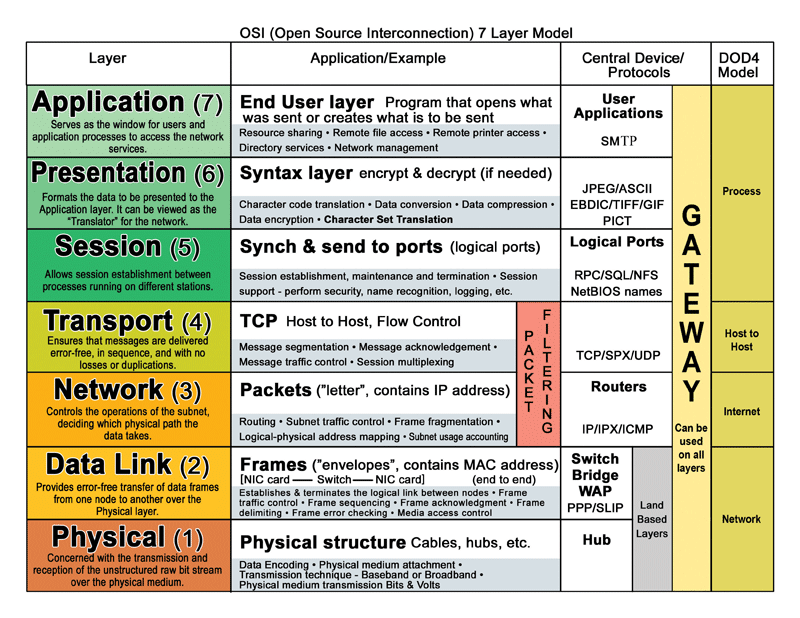
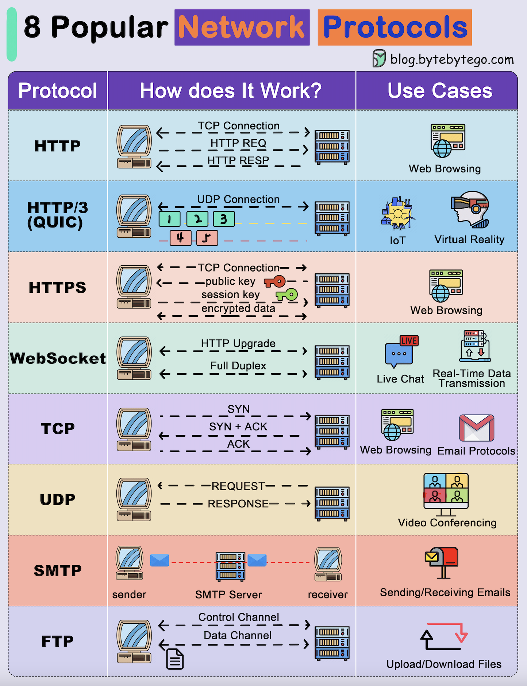
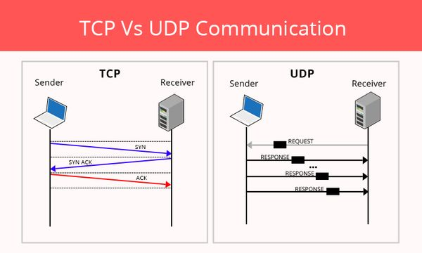

Network Protocols
🔹 What are Network Protocols?
A network protocol is a set of rules and standards that devices follow to communicate with each other over a network.
👉 Just like humans need a common language to talk, computers need protocols to exchange data.
A network protocol is a set of rules and standards that devices follow to communicate with each other over a network.
👉 Just like humans need a common language to talk, computers need protocols to exchange data.
🧠 Why Network Protocols Are Needed
Imagine this situation:
- One device sends data too fast
- Another device expects data slowly
- One device sends data in English
- Another understands only Hindi
📌 Protocols solve this problem by defining:
- How data should look
- When data should be sent
- What to do if something goes wrong
Network Protocols Across OSI Model

🔧 What Exactly Do Network Protocols Decide?
1️⃣ How Data Is Sent 📤
Protocols define:
- Data format (bits, frames, packets)
- Order of data
- Speed of transmission
- TCP sends data in sequence
- UDP sends data without order
2️⃣ How Data Is Received 📥
Protocols decide:
- How receiver understands data
- How data is reassembled
- How delivery is confirmed
- TCP sends ACK (Acknowledgment)
- UDP does not confirm delivery
3️⃣ How Errors Are Handled ⚠️
Protocols define:
- What happens if data is lost
- What happens if data is corrupted
- Whether data should be resent
- TCP retransmits lost packets
- UDP ignores errors
🧩 Real-Life Analogy (VERY IMPORTANT 💡)
📮 Sending a Letter (Postal System)
📌 Without postal rules → letters lost
📌 Without network protocols → data communication fails
| Postal System | Network Protocol |
|---|---|
| Address on envelope | IP address |
| Registered post | TCP |
| Normal post | UDP |
| Post office rules | Protocol rules |
📌 Without postal rules → letters lost
📌 Without network protocols → data communication fails
Popular Network Protocols Overview

🔹 TCP vs UDP (VERY IMPORTANT)
🔵 TCP (Transmission Control Protocol)
✔ Reliable delivery
✔ Error checking
✔ Data arrives in order
Characteristics:
✔ Error checking
✔ Data arrives in order
Characteristics:
- Slower
- Connection-oriented
- Web browsing
- File transfer
🟠 UDP (User Datagram Protocol)
✔ Fast data transfer
❌ No delivery guarantee
Characteristics:
❌ No delivery guarantee
Characteristics:
- Faster
- Connectionless
- Video streaming
- Online games
- Voice calls
TCP vs UDP Comparison

🧠 Exam Trick
Banking → TCP
YouTube → UDP
Banking → TCP
YouTube → UDP
🔹 FTP, SFTP, TFTP (File Transfer)
FTP
• Not secure (plain text)
• Port: 21
• Rarely used today
• Not secure (plain text)
• Port: 21
• Rarely used today
SFTP
• Secure (uses SSH encryption)
• Port: 22
• Preferred in companies
• Secure (uses SSH encryption)
• Port: 22
• Preferred in companies
TFTP
• Very simple
• No authentication
• Port: 69 (UDP)
• Used for router/switch configs
• Very simple
• No authentication
• Port: 69 (UDP)
• Used for router/switch configs
🔹 HTTP & HTTPS
HTTP
• No encryption
• Port: 80
• No encryption
• Port: 80
HTTPS
• Encrypted (SSL/TLS)
• Port: 443
• Used by modern websites
• Encrypted (SSL/TLS)
• Port: 443
• Used by modern websites
🔹 DHCP & DNS (CORE SERVICES)
DHCP
Automatically assigns IP, subnet, gateway, DNS
📌 Without DHCP → manual IP needed
Automatically assigns IP, subnet, gateway, DNS
📌 Without DHCP → manual IP needed
DNS
Converts name to IP
google.com → 142.250.182.14
Converts name to IP
google.com → 142.250.182.14
🧠 Exam Trap
DNS does ❌ NOT assign IP
DHCP does ❌ NOT convert names
DNS does ❌ NOT assign IP
DHCP does ❌ NOT convert names
🔹 ICMP & NTP (Support Tools)
ICMP
• Error reporting
• Used by ping & traceroute
• Error reporting
• Used by ping & traceroute
NTP
• Synchronizes time
• Important for logs & security
• Synchronizes time
• Important for logs & security
🧠 MASTER TABLE (EXAM READY)
| Protocol | Purpose | Port |
|---|---|---|
| TCP | Reliable delivery | — |
| UDP | Fast delivery | — |
| FTP | File transfer | 21 |
| SFTP | Secure file transfer | 22 |
| TFTP | Device config | 69 |
| HTTP | Web | 80 |
| HTTPS | Secure web | 443 |
| DHCP | IP assignment | 67/68 |
| DNS | Name resolution | 53 |
| ICMP | Ping / errors | — |
| NTP | Time sync | 123 |
🛠️ CCST Troubleshooting Scenarios
❌ Website not opening → Check DNS / HTTPS
❌ PC has no IP → Check DHCP
❌ Can’t ping server → ICMP blocked / network issue
❌ File transfer insecure → Use SFTP, not FTP
❌ PC has no IP → Check DHCP
❌ Can’t ping server → ICMP blocked / network issue
❌ File transfer insecure → Use SFTP, not FTP
🧠 Memory Tricks
DHCP = Gives IP
DNS = Names to IP
HTTPS = Secure
ICMP = Ping
NTP = Time
DHCP = Gives IP
DNS = Names to IP
HTTPS = Secure
ICMP = Ping
NTP = Time